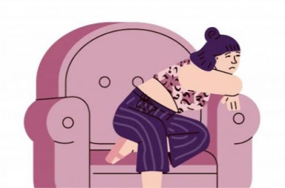
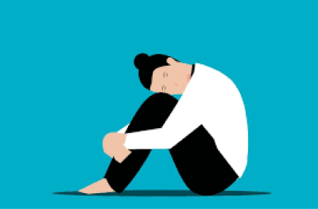
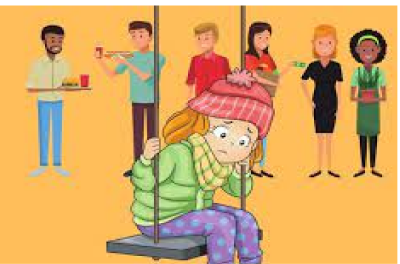
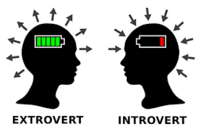
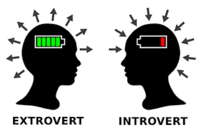
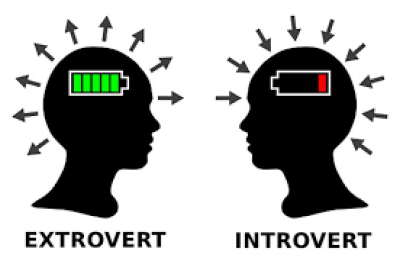
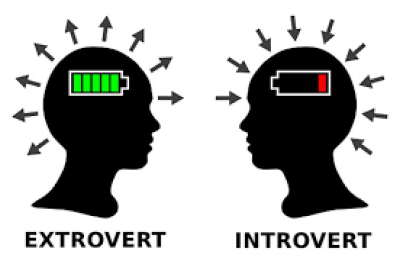
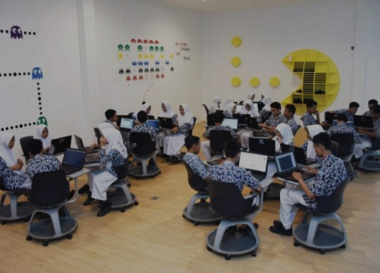
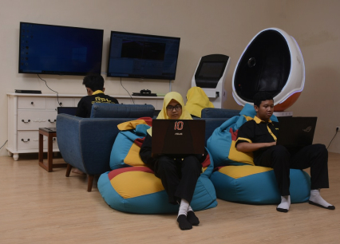
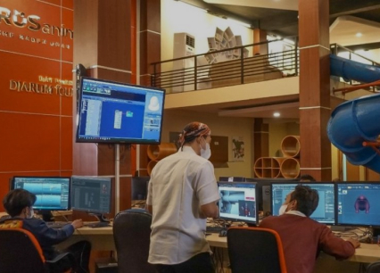

Memahami
Bersosialisasi



 


Memahami
Bersosialisasi

Kenapa
Bersosialisasi?
sosialisasi adalah suatu proses interaksi dan pembelajaran yang dilakukan seorang manusia sejak lahir hingga akhir hayatnya di dalam suatu budaya masyarakat. Sedangkan, pengertian sosialisasi secara sempit berarti sebuah proses pembelajaran dari manusia
agar dapat mengenali lingkungan yang kelak akan ia hidupi, baik lingkungan fisik ataupun sosial.
Dengan adanya proses sosialisasi, maka seseorang bisa mengetahui, memahami sekaligus menjalankan hak dan kewajibannya berdasarkan peran status masing-masing sesuai budaya masyarakat. Selanjutnya, dalam proses pengenalan hak
dan kewajiban seorang manusia dewasa, setiap individu atau manusia perlu melakukan sosialisasi untuk mempelajari dan mengembangkan pola-pola perilaku sosial bersama anggota masyarakat lainnya.
Proses Dalam Bersosialisasi
Pada proses sosialisasi terdapat juga hal yang membentuk kepribadian manusia atau pun dirimu, berikut ada tiga proses sosialisasi yang perlu kamu ketahui:
01
Internalisasi nilai-nilai
Proses penanaman dan pembiasaan nilai dan norma sosial ke dalam diri individu yang berlangsung sejak lahir hingga meninggal.
02
Enkulturasi
Proses pengembangan yang berasal dari nilai-nilai budaya yang sudah tertanam dalam diri seseorang dan menjadi kebiasaan dalam perilaku sehari-hari.
03
Pendewasaan diri
Proses ini merupakan penggabungan dari belangsungnya proses internalisasi dan enkulturasi. Proses ini bisa dikatakan sudah memasuki fase dewasa dan siap memegang tanggung jawab
Social introvert lebih menghargai kesendirian, tapi juga suka bersosialisasi dengan kelompok kecil dan terbuka untuk berteman. Karena introvert sangat analitis, seorang social introvert harus mengikuti intuisi mereka ketika akan bertemu seseorang. Mereka akan selektif dan pergi ke tempat-tempat yang mereka sukai dan cenderung menikmati obrolan ringan hingga serius.
Social introvert lebih menghargai kesendirian, tapi juga suka bersosialisasi dengan kelompok kecil dan terbuka untuk berteman. Karena introvert sangat analitis, seorang social introvert harus mengikuti intuisi mereka ketika akan bertemu seseorang. Mereka akan selektif dan pergi ke tempat-tempat yang mereka sukai dan cenderung menikmati obrolan ringan hingga serius.
Social introvert lebih menghargai kesendirian, tapi juga suka bersosialisasi dengan kelompok kecil dan terbuka untuk berteman. Karena introvert sangat analitis, seorang social introvert harus mengikuti intuisi mereka ketika akan bertemu seseorang. Mereka akan selektif dan pergi ke tempat-tempat yang mereka sukai dan cenderung menikmati obrolan ringan hingga serius.
Social introvert lebih menghargai kesendirian, tapi juga suka bersosialisasi dengan kelompok kecil dan terbuka untuk berteman. Karena introvert sangat analitis, seorang social introvert harus mengikuti intuisi mereka ketika akan bertemu seseorang. Mereka akan selektif dan pergi ke tempat-tempat yang mereka sukai dan cenderung menikmati obrolan ringan hingga serius.
Menjadi Diri Sendiri
Fokus Pada Tujuan
Tidak Membandingkan Diri Sendiri
Memiliki Target Dan Impian
Fokus pada Hal Positif
Percaya Jika kamu Sudah Lebih Baik
Mengenali Kelebihan akan Diri Sendiri
Fokus pada Kebahagiaan Dirimu
Berhenti Membandingkan Diri dengan Orang Lain.
Jangan Hidup untuk Menyenangkan Orang Lain.
"Jangan biarkan opini orang lain menenggelamkan suara dari dalam dirimu."
- Steve Jobs -